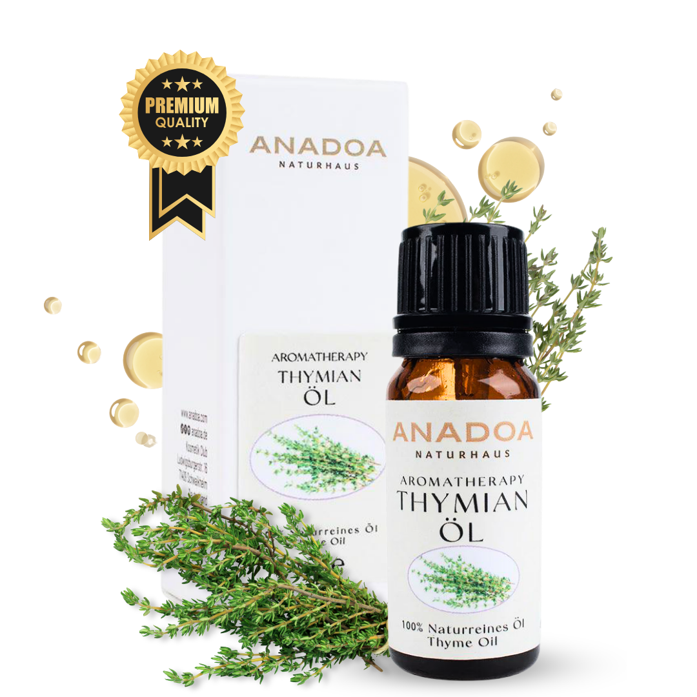

Was ist Thymianöl?
Thymianöl (Thymus vulgaris) ist das absolute Schwergewicht der Aromatherapie, wenn es um tiefe Atemwegsinfektionen, Immunschwäche und hartnäckige Bakterien geht. Schon die römischen Legionäre badeten in Thymianaufgüssen, um Mut und körperliche Widerstandskraft vor der Schlacht zu tanken.
In der modernen Phytotherapie und Aromamedizin ist Thymian das Lungenkraut schlechthin. Es entkrampft bei schlimmen Hustenattacken, desinfiziert die Bronchien und verleiht dem Körper die fehlende Energie, um eine Krankheit abzuschütteln. Gleichzeitig ist es eines der komplexesten Öle in Bezug auf seine Sicherheit.
Wo und wie wird Thymianöl geerntet?
Der echte Thymian (Thymus vulgaris) liebt die trockenen, felsigen und sonnendurchfluteten Hänge der Mittelmeerländer, insbesondere Südfrankreich, Spanien und Marokko. Die Pflanze passt ihre chemische Zusammensetzung extrem an die Höhenlage und Sonneneinstrahlung an.
Geerntet wird das blühende Kraut. Nur die oberirdischen Teile (Blätter und feine Stängel) werden für die Destillation verwendet. Der richtige Erntezeitpunkt im Sommer ist entscheidend, da das ätherische Öl genau dann die höchste Konzentration an Wirkstoffen aufweist.
Die Kunst der Destillation: Wie wird Thymianöl hergestellt?
Das Thymianöl wird durch sehr sorgfältige Wasserdampfdestillation des angetrockneten Krautes gewonnen. Das Öl ist rötlich-braun (beim roten Thymian) bis hellgelb (beim weißen, rektifizierten Thymian).
Der Duft ist extrem medizinisch, krautig, würzig-scharf und durchdringend. Er erinnert an Hustensäfte und mediterrane Hitze.
Biochemie und die lebenswichtigen Chemotypen (CT)
Thymianöl ist das absolute Paradebeispiel für 'Chemotypen' in der Aromatherapie. Je nach Standort produziert die gleiche Pflanze völlig andere Wirkstoffe. Sie MÜSSEN wissen, welchen Sie kaufen:
- Thymus vulgaris CT Linalool: Wächst in hohen Lagen. Extrem sanft, kinderfreundlich, antiviral und hautverträglich. Der Duft ist weicher und fast blumig-krautig.
- Thymus vulgaris CT Thymol (Roter Thymian): Wächst im heißen Tal. Ein starkes Phenol! Hochaggressiv, hautreizend, aber das stärkste natürliche Antibiotikum gegen bakterielle Lungeninfektionen. Nur für Erwachsene!
- Thymus vulgaris CT Thujanol: Sehr selten und teuer. Extrem stark gegen Viren, stärkt das Immunsystem massiv und ist dennoch sanft zur Leber und Haut.
Woran erkennen Sie 100% naturreines Thymianöl?
Kaufen Sie niemals ein Thymianöl ohne klare Spezifikation:
- Zwingende CT-Angabe: Steht auf der Flasche nur 'Thymianöl', Finger weg! Ein seriöser Anbieter schreibt immer 'CT Linalool' oder 'CT Thymol' dazu. Ansonsten spielen Sie russisches Roulette mit Ihrer Haut.
- Der Preis: Echter Thymian CT Thujanol oder Linalool ist deutlich teurer als der grobe Thymol-Typ aus Massenproduktion.
- Bio-Siegel: Wie bei allen Heilkräutern garantiert das Bio-Siegel, dass keine Pestizidrückstände durch die Destillation konzentriert wurden.
Anwendung: Thymianöl richtig mischen und nutzen
Thymian ist das beste Notfallöl bei schwerem Husten und Schwäche:
- Der Befreiungs-Brustbalsam: 2 Tropfen Thymianöl (CT Linalool) + 2 Tropfen Eukalyptusöl in 20 ml Olivenöl mischen. Vor dem Schlafen auf die Brust und den oberen Rücken massieren.
- Die Immunkick-Fußmassage: 2 Tropfen Thymianöl (CT Thymol) stark verdünnt in 1 Esslöffel Trägeröl mischen und abends unter die Fußsohlen massieren. Stimuliert die weißen Blutkörperchen.
- Die Inhalation bei Bronchitis: 1 Tropfen Thymianöl in heißes Wasser geben und den Kopf über die Schüssel halten. Augen fest schließen! Tötet Bakterien tief in den Atemwegen.
Sicherheit und häufige Anwendungsfehler bei Thymianöl
Hinweis: Achten Sie bei Thymianöl (besonders CT Thymol) auf höchste Vorsicht:
- Hautverbrennungen: Thymol- und Carvacrol-Typen sind heiße Öle. Unverdünnt fressen sie sich regelrecht in die Haut. Niemals pur auftragen!
- Nicht für Asthmatiker: Bei schwerem Asthma kann der extreme Reiz von Thymianöl Bronchialkrämpfe auslösen.
- Nicht in der Badewanne: Niemals Thymianöl (CT Thymol) ins Badewasser geben, da es die empfindliche Haut im Intimbereich massiv verbrennen kann.
Bewährte Aromatherapie-Mischungen mit Thymianöl
Thymianöl ist dominant und wird primär medizinisch, nicht wegen des Duftes gemischt:
- Die 'Abwehr-Stark' Raumluft: 2 Tropfen Thymianöl (CT Linalool) + 4 Tropfen Zitronenöl im Diffuser. Tötet Keime in der Raumluft während der Grippe-Saison.
- Das 'Hals-Kratzen' SOS-Öl: 1 Tropfen Thymianöl + 1 Tropfen Lavendelöl in 1 TL Jojobaöl mischen und sanft von außen auf den Hals massieren (nicht schlucken!).
- Das 'Muskel-Löser' Sportöl: 2 Tropfen Thymianöl (CT Thymol) + 3 Tropfen Rosmarinöl in 20 ml Sesamöl. Nach dem Sport kräftig in schmerzende Waden kneten.
Häufig gestellte Fragen zu Thymianöl
Ist Thymianöl gefährlich für Kinder?
Das hängt absolut vom Chemotyp (CT) ab! Thymianöl CT Linalool ist sehr sanft und hervorragend für den Husten von Kindern ab 3 Jahren geeignet. Thymianöl CT Thymol hingegen ist ein starkes Phenol, extrem hautreizend und für Kinder unter 6 Jahren streng verboten. Kaufen Sie für die Familie immer den milden 'Linalool'-Typ.
Wie unterscheidet sich Thymianöl von Oreganoöl?
Beide sind starke, antibakterielle 'heiße Öle'. Oreganoöl (Carvacrol) ist noch aggressiver und stärker gegen hartnäckige Bakterien. Thymianöl ist etwas sanfter, fokussiert sich massiv auf die tiefen Atemwege (Lunge, Bronchien) und stärkt das Immunsystem langfristig.
Kann Thymianöl bei starkem Husten helfen?
Ja, es ist das stärkste Lungenkraut der Aromatherapie. Es wirkt extrem krampflösend auf die Bronchialmuskulatur (ideal bei Keuchhusten oder tiefem, festsitzendem Husten) und tötet gleichzeitig die Bakterien in den Atemwegen ab. Eine Inhalation oder ein Brustbalsam wirkt oft Wunder.
Darf ich Thymianöl unverdünnt anwenden?
Nein, niemals! Besonders die Chemotypen Thymol und Carvacrol verursachen pur auf der Haut chemische Verbrennungen und Rötungen. Es muss zwingend in einem Trägeröl auf maximal 1% bis 2% verdünnt werden.
Fördert Thymianöl das Immunsystem?
Absolut. Thymianöl kurbelt die Produktion von weißen Blutkörperchen (Leukozyten) an und stimuliert so direkt die körperliche Immunabwehr. Es ist das perfekte Öl, wenn man spürt, dass eine Grippe im Anmarsch ist.